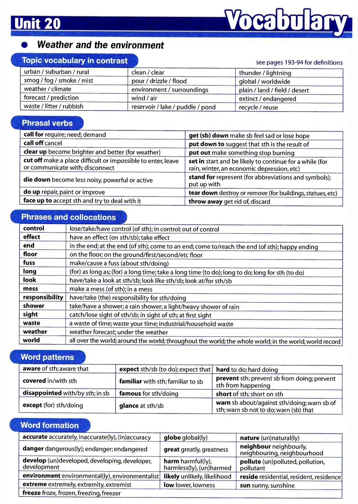
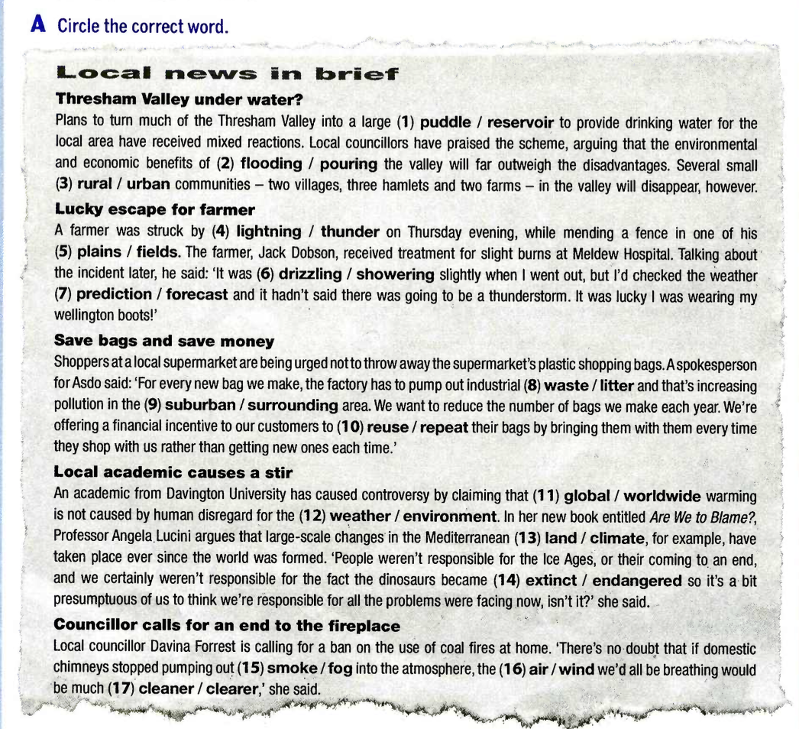

I know Jane's pretty, but seen someone spend so much time in front of the mirror?
It's raining, so cancel the concert?
pass me the salt, please?
Sir, repeat the homework is, please?
the couple you met in France last year staying at the same hotel?
I know how to pronounce 'controversy', but what ?
It's a great idea, but it will work?
B. Write questions
Use the prompts to form correct questions.
you / wash / your hair / when I rang?
Julie / give / you / her e-mail address / yesterday?
you / always / have / lunch / this late?
Jack and Tom / come / to the party / tonight?
you / can / give / me / a hand / later?
how / you / spell / your name?
why / the government / can't / do / something / about the situation?
where / you / go / for your honeymoon / last year?
what / your house / look like / when / it is finished?
which / flavour of ice cream / your favourite / be?
C. Complete using the words in the box
who • where • which • whose • what • whom • how • when • why
HELP US HELP THE ENVIRONMENT
(1) responsibility is it to look after the environment? Yours! And
(2) should you start? Right now is the answer! But
(3) is going to help you? We are!
(4) me? We all have a responsibility. But
(5) can I make a difference? By recycling!
(6) 's the first step? Speak to our officers.
(7) other organisations are you connected to?
(8) is GreenWarriors based? Northampton.
D. Subject vs. Object Questions
Find the phrase that fits the context of the answer.
'Who to the party?' | 'Maria, but she couldn't come.'
'Who at the supermarket?' | 'Just Ben, but he didn't see me.'
'What the impression that Greg was depressed?' | 'Work, really.'
'Who had stolen the money?' | 'Jenny, but she believed me.'
'Which programme the most?' | 'Well, I learned a lot from *Extreme History*.'
'Who this book from?' | 'Tracy, and I need to give it back.'
'What to this part of the world?' | 'Just sightseeing.'
'Who of starting the fight?' | 'He says that John started it.'
'Which person the most?' | 'I would say my grandmother.'
'Who your secret?' | 'I think Simone probably told him.'
E. Write one word in each gap
Early humans and the weather
(1) you think you understand the weather? For early humans, the weather was a constant source of questions. (2) is it raining? What (3) this storm mean? Where (4) the wind go when it blows? People came up with many explanations for the weather, usually involving gods or ancestors. (5) you explain what a rainbow is? The Cherokee people of America believed that it was the hem of the sun god’s coat.
The weather has also been used to explain other things. What would you say if someone asked you (6) kangaroos come from? You’d probably say Australia, but (7) did the Aborigines explain these strange animals? They told a story about a great storm. A group of Aboriginal hunters watched in amazement as the wind blew large creatures over their heads. (8) could they be? Finally, the wind died down and the kangaroos landed on the ground.
F. Match to make sentences
1. You've sent that letter I gave you,
2. You catch the bus to school,
3. You won't tell anyone about this,
4. You're a friend of Charlie's,
5. You were living in Hong Kong then,
6. You never work more than you have to,
7. You made no effort to make friends with Darren,
Get me some chewing gum when you go to the shop, you?
Let's watch that new DVD you bought today, we?
There's not really much point waiting, there?
Tonia will put us up for the weekend, she?
Nobody seems to like Jessica, they?
I'm not making much sense now, I?
Let's go because it's getting late, it?
If you borrow my coat, don't get it dirty, you?
Bill should be here by now, he?
I'm making you feel uncomfortable, I?
Someone left the door open, they?
Nobody knows about this, they?
H. Rewrite the sentences correctly
I wonder if you could tell me what time does the plane from Frankfurt arrive?
Could you let me know when would you like me to come for an interview?
I wonder if you know what bus should I catch for the town centre.
Do you think you could tell me how do you work this ticket machine?
I wonder you have seen George?
I would like to know do you have any double rooms?
Can you tell me what were you doing in my office?
Do you know where is this address?
I. Sentence Transformation
When does Tina get back from Berlin? (know) Do back from Berlin?
What time does the film start tonight? (starts) Could you tell me tonight?
Is service included in the price? (know) I would like to in the price.
What is the salary? (let) Could you the salary is?
Have you been to Brussels before? (wonder) I to Brussels before.
Did Gail pass her exam? (passed) Do you know her exam?
I wonder if you know where Mary went after the party last night. (go) Where after the party last night?
I would like to know how many days holiday we get each year. (given) How many days holiday each year?
J. Find the extra word
Do you have much free time these days or are you be quite busy?
I would like to know it when I can expect my order to be delivered.
Do you think whether you could possibly let me know how soon you will have the work finished?
I wonder if you know who it is responsible for cleaning the building.
Tell Roger who did you saw when you were at the police station the other day.
Did Dad mention who he sold him the car to?
You shouldn't leave your homework to the very last minute if you want to get a good mark, should not you?
I wonder it if you know where I can buy something to eat.
Phase 2: Vocabulary & Phrasals
Unit 20: Weather and the Environment

A. Find the correct word

1.
2.
3.
4.
5.
6.
7.
8.
9.
10.
11.
12.
13.
14.
15.
16.
17.
B. Phrasal Verbs
call forcall offclear upcut offdie downdo upface up toput out
The weather should have by this evening.
Do you think the wind has enough to go sailing?
Environmentalists are stricter controls.
Why can't they the fact that products are bad?
Firefighters managed to the forest fire.
We'll have to the demonstration if it rains.
The town was totally for three days.
It didn't take us long to the old barn.
C. Phrasal Verbs (Gap Fill)
Write one word in each gap.
Don't throw those batteries . They're not biodegradable!
Rainy days always me down.
Could you tell me what the letters 'CJD' stand ?
They're planning to tear the old cinema and build a shopping centre.
I think the rain's set for the day, don't you?
Some scientists put the extinction of the dinosaurs down changes in the world's climate.
D. Phrases and Collocations
Complete using the word given (2-5 words).
Josh isn't feeling very well today. **weather** Josh is feeling a bit today.
CFC's have badly affected the ozone layer. **effect** CFC's have the ozone layer.
Would you mind quickly looking at the engine? **look** Would you mind the engine?
Cleaning the beach took ages. **long** It clean the beach.
It's Carl's job to read the barometer every morning. **responsibility** Carl the barometer every morning.
There's no point trying to persuade him to recycle. **waste** It trying to persuade him to recycle.
We'll soon be able to see land, won't we? **sight** We'll soon be land, won't we?
I couldn't steer the boat because the waves were so high. **control** I the boat because the waves were so high.
E. Find the correct word
The days of Athens being one of the most polluted cities have to an end.
Their office is the fifteenth floor.
The government's a complete mess of its policy.
It's so hot, I think I'm going to a cold shower.
As usual, nature lovers are a fuss about nothing.
I can't believe there's anyone in the world who wants the hole to get bigger.
It looks a large number of species will become extinct.
You used to believe there was a pot of gold the end of every rainbow.
F. Word Patterns: San Francisco
Tourists to San Francisco are rarely disappointed (1) the famous range of attractions. But SF is more famous (2) being on the San Andreas fault. It's hard (3) imagine why anyone would want to live in such a dangerous area. They are all familiar (4) the faultline, and are aware (5) the potential danger. Yet nothing, it seems, will prevent people (6) building in SF. A quick glance (7) a photo shows many skyscrapers completely covered (8) glass. Seismologists are constantly warning residents (9) the possibility of 'the next big quake'. They expect it (10) happen sooner rather than later. SF are not short (11) courage. Except (12) making doubly sure buildings are built to safety standards, they carry on.
G. Word Formation
Most scientists accept that globe warming is a reality.
The weather was freeze.
What can we do to protect danger species?
Meteorologists forecast weather with incredible accurate.
Develop are planning to build a water park.
All our products are environment friendly.
Everyone should be extreme worried about the ozone layer.
We live in a resident area twenty minutes from town.
There's not much likely of groups stopping the factory.
This snake is completely harm.
Let's go outside and enjoy the sunny while it lasts.
What kind of neighbour did you grow up in?
I hope they don't low the price of petrol.
The great of solar power lies in its simplicity.
A number of different pollute in the river killed the fish.
It's nature dark for this time of day.
A. Spot the Extra Word
If a line is correct, put a tick (✓). If there is an extra word, write it in the box.
1. Forecasts might warn to us about threats...
2. but imagine if we could take out control...
3. prevent dangerous weather conditions from in the first place.
4. Controlling the weather may be the biggest technological...
5. challenge we face. For a long of time, scientists...
6. of creating artificial clouds to bring rain to areas hit by drought,
7. but it's much harder to do than they expected that. The global...
8. weather system is very complicated, with each part having an...
9. effect taken on all the others. The scientists may feel they are...
10. wasting up their time, but success could save millions of lives.
B. Word Formation
There was a high of rain this weekend.
Using our cars causes .
Forecasting the weather takes training.
Litter is often a problem in areas.
According to , we could face a crisis.
It was a wonderfully day.
The giant panda is because its habitat is being destroyed.
It was absolutely !
C. Sentence Transformations
Did you see the documentary about the ozone layer? (saw) I wonder the documentary.
I saw a badger for a moment before it disappeared. (sight) I a badger before it disappeared.
I hope the weather gets better for our trip. (up) I hope for our trip.
Did you hear that the greenhouse had been demolished? (torn) Did you hear that they the greenhouse?
Everything we do affects the environment in one way or another. (effect) Everything we do the environment.
I don't really know a lot about the work Greenpeace does. (familiar) I the work that Greenpeace does.
The builders have spoiled our garden. (mess) The builders have our garden.
Dr Trent said the problems were caused by rubbish. (put) Dr Trent rubbish in the streets.
Most people know that wasting water causes problems. (aware) Most people the problems caused by wasting water.
D & E. Multiple Choice
No one seems to care about the environment, ?
Do you know where a book?
The law prevents people rubbish here.
Let's walk to the shops instead, ?
There isn't much point in trying to save electricity, ?
Don't drop your sweet wrapper on the floor, ?
'I went to the exhibition.' 'Oh, yes? What there?'
There's been a in Germany and a village was destroyed.
Do you know what CFC ?
Dinosaurs have been for millions of years.
It's sunny, but there's a very cold .
If you ask me, waste is a bigger problem.
As towns grow, they tend to destroy the areas.
Jill put her wellington boots on and played in the .